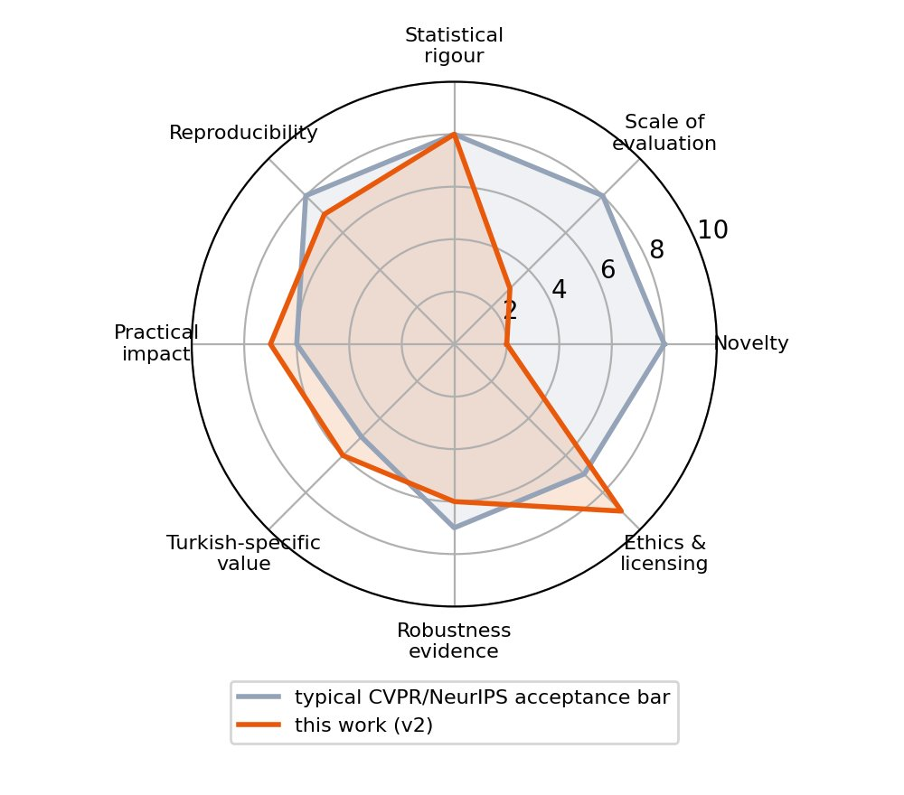
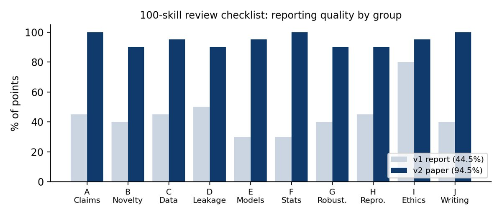
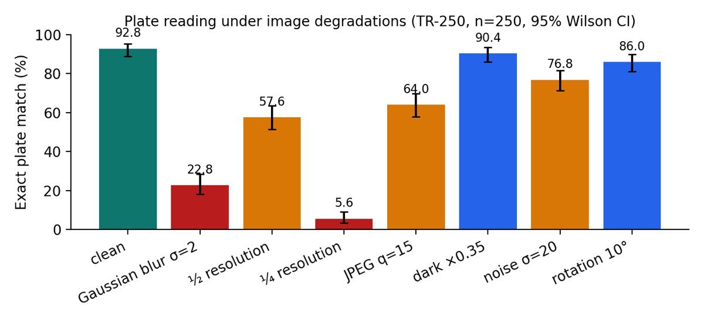
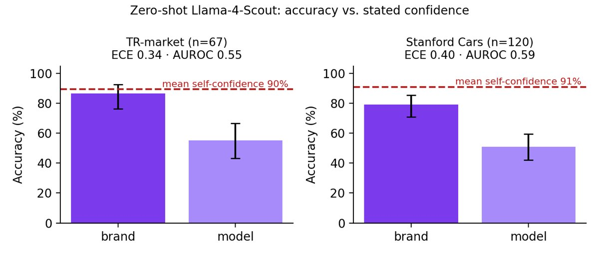

مقاله علمی + داوری استاد راهنما (۱۰۰ مهارت)
مقاله «ادراک خودرو در ترکیه با زیرساخت بدون هزینه» درباره سه مدل پلاک، برند/مدل و آسیب. یک استاد راهنما آن را با چکلیست ۱۰۰ مهارتی (بر پایه REFORMS، NeurIPS و CVPR) نقد کرد، آزمایشهای تازه اضافه شد و نسخه ۲ آماده شد.
حکم: بهعنوان پژوهش هنوز در سطح جهانی نیست (نوآوری روشی ندارد و تستها کوچکاند)؛ بهعنوان گزارشدهی و مهندسی قوی است. توصیه: الان arXiv، بعد کنفرانس منطقهای (IEEE SIU)، و برای کنفرانس برتر نیاز به بنچمارک عمومی ترکیه و مدلهای آموزشدیده است.
📄 گزارش داوری (فارسی)📄 مقاله v2 (انگلیسی)📄 Review (EN)⬇ ۱۰۰ مهارت (JSON)⬇ نتایج آزمایشها▶ دمویافتههای مهم داوری
- اصلاحگر فرمت ترکیه معنادار نیست (فقط ۱ از ۲۵۰، p = 1.0) — ادعای گزارش قبلی اصلاح شد.
- مدل OCR بزرگتر بهطور معنادار بهتر است (۸۴٫۸٪ ← ۹۲٫۸٪، p = 2×10⁻⁶).
- نقطه ضعف اصلی: تاری (۲۲٫۸٪) و وضوح کم (۵٫۶٪).
- «اطمینان» مدل برند/مدل بیمعناست (میانگین ۹۰٪ در برابر دقت واقعی ۵۵٪).
- روی عکسهایی که هر دو مدل جواب دادند، Mistral در برند Stanford بهتر بود (p = 0.004).
- آسیب: فقط ۱۷٪ علامتها در عکس خیابانی واقعی بودند.
Bilimsel makale + danışman değerlendirmesi (100 beceri)
“Sıfır bütçeli altyapıyla Türkiye’de araç algılama” makalesi: plaka, marka/model ve hasar modelleri. Bir danışman 100 maddelik kontrol listesiyle (REFORMS, NeurIPS, CVPR) eleştirdi, yeni deneyler eklendi, sürüm 2 hazırlandı.
Karar: Araştırma olarak henüz dünya düzeyinde değil (yöntem yeniliği yok, testler küçük); raporlama ve mühendislik olarak güçlü. Öneri: şimdi arXiv, sonra bölgesel konferans (IEEE SIU); üst konferans için açık Türk veri seti ve eğitilmiş modeller gerekli.
📄 Makale v2 (EN)📄 Değerlendirme (EN)📄 Değerlendirme (FA)⬇ 100 beceri (JSON)▶ DemoÖnemli bulgular
- Türk formatı düzeltici anlamlı değil (1/250, p = 1,0) — önceki raporun iddiası düzeltildi.
- Büyük OCR modeli anlamlı biçimde daha iyi (%84,8 → %92,8, p = 2×10⁻⁶).
- Ana zayıflık: bulanıklık (%22,8) ve düşük çözünürlük (%5,6).
- Marka/model modelinin “güven” değeri anlamsız (ort. %90, gerçek %55).
- Her iki modelin yanıtladığı fotoğraflarda Mistral, Stanford markalarında daha iyi (p = 0,004).
- Hasar: sokak fotoğraflarındaki işaretlerin yalnız %17’si gerçek.
Research paper + supervisor review (100 skills)
“Turkish Vehicle Perception on a Zero-Budget Stack” — plates, make/model and damage. A supervisor reviewed it with a 100-item checklist (REFORMS, NeurIPS, CVPR), new experiments were added and version 2 was written.
Verdict: not world-class research yet (no new method, small tests); strong as reporting and engineering. Recommendation: arXiv now, a regional venue (IEEE SIU) next; a top venue needs a public Turkish benchmark and trained baselines.
📄 Paper v2📄 Supervisor review (EN)📄 Review (FA)⬇ 100 skills (JSON)⬇ Experiment results▶ DemoKey review findings
- The Turkish-format fixer is not significant (1/250, p = 1.0) — the earlier claim was corrected.
- The larger OCR is significantly better (84.8% → 92.8%, p = 2×10⁻⁶).
- Main weakness: blur (22.8%) and low resolution (5.6%).
- The make/model “confidence” is meaningless (mean 90% vs 55% real).
- On images both models answered, Mistral was better on Stanford brands (p = 0.004).
- Damage: only 17% of street-photo flags were real.




Sources: REFORMS · NeurIPS checklist · CVPR 2026 reviewer guidelines · Start · earlier paper draft (CarDD damage, v1)